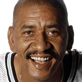

Played 2 seasons for 3 teams; his teams went 55–60 in his games.
Jump to: Record by opponent · Season by season · Teammate help
Compare Jim Eakins with…
Final NBA finish, season by season
Title Finals Other playoffs Missed playoffs. #1 = champion; the dashed line is last place that season. Each point opens that season's final standings.
All 22 teams ranked in 1977-78, his best finish (#7)Teammate help
- Brian Winters1.01 season
- Brian Taylor0.51 season
- Quinn Buckner0.51 season
Career
Career records (W–L, W − L, with and without) include 2026-27 games through Nov. 23, 2026; season counts and finishes are through 2025-26. Each card opens its board in the same scope. How we count.

Latest completed seasons
- 1977-78·
 Milwaukee·#7 of 2244–38 · Lost in the conference semifinals 3–4 to
Milwaukee·#7 of 2244–38 · Lost in the conference semifinals 3–4 to  Denver
Denver - 1976-77·Kansas City·#13 of 2240–42 · Missed playoffs
Season by season
Newest first; every header sorts. Final NBA finish is the team's rank among all teams that season (#1 = champion) and opens that season's standings. "Without him" uses the team-season window; the span line counts only the games between his first and last game for the team.
| 1977-78 | #6 of 22 | 52–30 63.4% | Lost conf semis 2–4 | 16 of 82 | 9–7 56.2% | 13–10 56.5%span: 1–1, gap +6.2 | −0.3 | |
| 1977-78 | #7 of 22 | 44–38 53.7% | Lost conf semis 3–4 | 17 of 82 | 6–11 35.3% | 31–19 62.0%span: 15–7, gap −32.9 | −26.7 | |
| 1976-77 | Kansas City8th West | #13 of 22 | 40–42 48.8% | Missed playoffs | 82 of 82 | 40–42 48.8% | N/A | N/A |
Teammate help by season
Help this season = Teammates Score points for honors won that season by teammates who shared a game with him, with every teammate that adds to it. Only honors won in that same season count. How help works.
- 1977-78
 San Antonio
San Antonio

George Gervin All-NBA 1stAll-Star516 gLarry Kenon All-Star116 gHelp this season: 6 = 5 George Gervin + 1 Larry Kenon
Other teammates (no honors that season): Mark Olberding 16 g, Coby Dietrick 16 g, Louie Dampier 16 g, Allan Bristow 16 g, Billy Paultz 15 g, Mike Gale 15 g, Scott Sims 9 g, James Silas 5 g, Mike Green 2 g
- 1977-78Milwaukee
Brian Winters All-Star117 gQuinn Buckner All-Def 2nd0.517 gMarques Johnson All-Rookie 1st0.2517 g
Help this season: 1.75 = 1 Brian Winters + 0.5 Quinn Buckner + 0.25 Marques Johnson
Other teammates (no honors that season): Dave Meyers 17 g, John Gianelli 17 g, Alex English 17 g, Junior Bridgeman 17 g, Lloyd Walton 16 g, Kent Benson 16 g, Ernie Grunfeld 14 g
- 1976-77Kansas City
Brian Taylor All-Def 2nd0.572 g
Help this season: 0.5 = 0.5 Brian Taylor
Other teammates (no honors that season): Richard Washington 82 g, Sam Lacey 82 g, Ron Boone 82 g, Scott Wedman 81 g, Ollie Johnson 81 g, Bill Robinzine 75 g, Mike Barr 73 g, Andre McCarter 59 g, Glenn Hansen 41 g, Bob Bigelow 29 g
Record against each opponent
Regular season, through 2025-26 (2026-27 games not included): 115 games, 55–60, against 22 franchises.
Grouped by franchise (named as today); game lists keep each team's name that season. Filters and the tab are kept in the URL, so a filtered view can be shared.
| Games list | |||||||
|---|---|---|---|---|---|---|---|
| 9 | 4–5 | 44.4% | −1 | N/A | 1976-77 to 1977-78 | ||
| 8 | 4–4 | 50.0% | 0 | N/A | 1976-77 to 1977-78 | ||
| 7 | 2–5 | 28.6% | −3 | N/A | 1976-77 to 1977-78 | ||
| 6 | 4–2 | 66.7% | +2 | N/A | 1976-77 to 1977-78 | ||
| 6 | 3–3 | 50.0% | 0 | N/A | 1976-77 to 1977-78 | ||
| 6 | 2–4 | 33.3% | −2 | N/A | 1976-77 to 1977-78 | ||
| 6 | 4–2 | 66.7% | +2 | N/A | 1976-77 to 1977-78 | ||
| 6 | 4–2 | 66.7% | +2 | N/A | 1976-77 to 1977-78 | ||
| 5 | 2–3 | 40.0% | −1 | N/A | 1976-77 to 1977-78 | ||
| 5 | 1–4 | 20.0% | −3 | N/A | 1976-77 to 1977-78 | ||
| 5 | 2–3 | 40.0% | −1 | 0–1 (1–2 in games) | 1976-77 to 1977-78 | ||
| 5 | 1–4 | 20.0% | −3 | N/A | 1976-77 to 1977-78 | ||
| 5 | 3–2 | 60.0% | +1 | N/A | 1976-77 to 1977-78 | ||
| 5 | 4–1 | 80.0% | +3 | N/A | 1976-77 to 1977-78 | ||
| 5 | 2–3 | 40.0% | −1 | N/A | 1976-77 to 1977-78 | ||
| 5 | 1–4 | 20.0% | −3 | N/A | 1976-77 to 1977-78 | ||
| 4 | 4–0 | 100.0% | +4 | N/A | 1976-77 | ||
| 4 | 2–2 | 50.0% | 0 | N/A | 1976-77 | ||
| 4 | 2–2 | 50.0% | 0 | N/A | 1976-77 | ||
| 4 | 1–3 | 25.0% | −2 | N/A | 1976-77 | ||
| 4 | 2–2 | 50.0% | 0 | N/A | 1976-77 | ||
| 1 | 1–0 | 100.0% | +1 | N/A | 1977-78 |
Rows add up to his career record in his games. A playoff series counts when he played in it; early round-robin games show as games only. How we count.
Playoffs, with and without him
Arrival and departure
Team wins per 82 games the season before he arrived vs his first season there, and his last season vs the season after he left. He leaves a team only when his next season with games is for another team (or he never plays again); whole seasons he missed and came back from are one "Missed" row with the team's record without him. Per 82 so short seasons compare fairly. These are team records, not a measure of what he did.
| Left | after 1977-78 | 1977-78: 52–30 52.0 per 82 | 1978-79: 48–34 48.0 per 82 without him | −4.0 wins | |
| Left | after 1977-78 | 1977-78: 44–38 44.0 per 82 | 1978-79: 38–44 38.0 per 82 without him | −6.0 wins | |
| Arrived | 1977-78 | 1976-77: 44–38 44.0 per 82 | 1977-78: 52–30 52.0 per 82 | +8.0 wins | |
| Arrived | 1977-78 | 1976-77: 30–52 30.0 per 82 | 1977-78: 44–38 44.0 per 82 | +14.0 wins | |
| Left | Kansas City | after 1976-77 | 1976-77: 40–42 40.0 per 82 | 1977-78: 31–51 31.0 per 82 without him | −9.0 wins |
| Debut | Kansas City | 1976-77 | 1975-76: 31–51 31.0 per 82 | 1976-77: 40–42 40.0 per 82 | +9.0 wins |
Seasons split between teams
Each team's record before his first game for it, inside his window (games with and without him) and after his last game, in the seasons he played for two or more teams.
| 1977-78 | Oct. 19, 1977 to Nov. 20, 1977 | N/A | 22–17 56.4% | 30–13 69.8% | 16 | |
| 1977-78 | Jan. 13, 1978 to April 8, 1978 | 7–8 46.7% | 37–30 55.2% | N/A | 17 |
Best duos
Team record in regular-season games both played, top 10 by win %, at least 50 games together.
- Bill Robinzine 40–35 53.3%
- Brian Taylor 38–34 52.8%
- Ollie Johnson 40–41 49.4%
- Andre McCarter 29–30 49.2%
- Ron Boone 40–42 48.8%
- Sam Lacey 40–42 48.8%
- Richard Washington 40–42 48.8%
- Scott Wedman 39–42 48.1%
- Mike Barr 33–40 45.2%
With and without his teammates
His 12 teammates with the most regular-season games together. "Together" is the team's record in the games both played for it; "Without him" is the team's record in the games Jim Eakins played for that team while the teammate was on it (between the teammate's first and last game for the team, the appearance span) and the teammate did not play. Fewer than 20 games without him: no gap. Games through Nov. 23, 2026. How we count.
- Ron BooneKansas City 1976-77
- Together
- 40–42 48.8%
- Without him
- N/A N/A
- Gap
- Too few games without him
- Sam LaceyKansas City 1976-77
- Together
- 40–42 48.8%
- Without him
- N/A N/A
- Gap
- Too few games without him
- Richard WashingtonKansas City 1976-77
- Together
- 40–42 48.8%
- Without him
- N/A N/A
- Gap
- Too few games without him
- Ollie JohnsonKansas City 1976-77
- Together
- 40–41 49.4%
- Without him
- 0–1 0.0%
- Gap
- Too few games without him
- Scott WedmanKansas City 1976-77
- Together
- 39–42 48.1%
- Without him
- 1–0 100.0%
- Gap
- Too few games without him
- Bill RobinzineKansas City 1976-77
- Together
- 40–35 53.3%
- Without him
- 0–2 0.0%
- Gap
- Too few games without him
- Mike BarrKansas City 1976-77
- Together
- 33–40 45.2%
- Without him
- 7–2 77.8%
- Gap
- Too few games without him
- Brian TaylorKansas City 1976-77
- Together
- 38–34 52.8%
- Without him
- 2–4 33.3%
- Gap
- Too few games without him
- Andre McCarterKansas City 1976-77
- Together
- 29–30 49.2%
- Without him
- 11–11 50.0%
- Gap
- 0.8 points higher
- Glenn HansenKansas City 1976-77
- Together
- 17–24 41.5%
- Without him
- 23–17 57.5%
- Gap
- 16.0 points higher
- Bob BigelowKansas City 1976-77
- Together
- 12–17 41.4%
- Without him
- 28–24 53.8%
- Gap
- 12.5 points higher
- Junior BridgemanMilwaukee 1977-78
- Together
- 6–11 35.3%
- Without him
- N/A N/A
- Gap
- Too few games without him